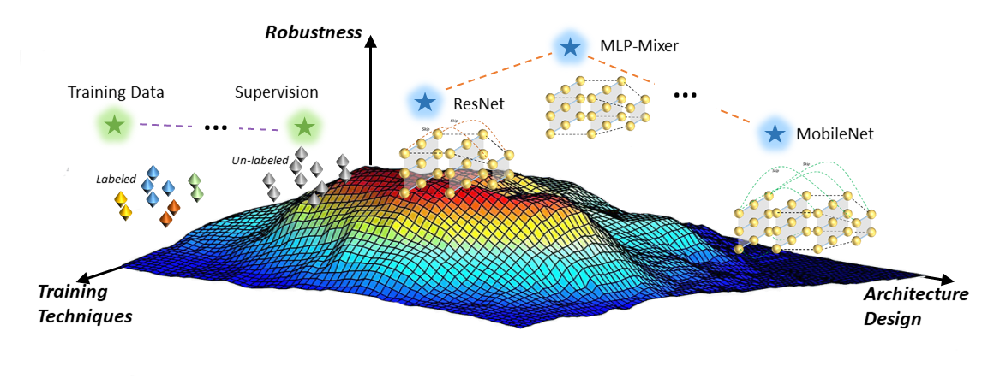

|
重明 (AISafety)[Paper] [Media] [Project]重明 is an open-source platform to evaluate model robustness and safety towards noises (e.g., adversarial examples, corruptions, etc.). The name is taken from the Chinese myth 重明鸟, which has strong power, could fight against beasts and avoid disasters. We hope our platform could improve the robustness of deep learning systems and help them to avoid safety-related problems. 重明 has been awarded the 首届OpenI启智社区优秀开源项目 (First OpenI Excellent Open Source Project). |
|  |
RobustART[Paper] [Media] [Project]RobustART is the first comprehensive Robustness investigation benchmark on large-scale dataset ImageNet regarding ARchitectural design (49 human-designed off-the-shelf architectures and 1200+ neural architecture searched networks) and Training techniques (10+ general ones e.g., extra training data, etc) towards diverse noises (adversarial, natural, and system noises). Our benchmark (including open-source toolkit, pre-trained model zoo, datasets, and analyses): (1) presents an open-source platform for conducting comprehensive evaluation on diverse robustness types; (2) provides a variety of pre-trained models with different training techniques to facilitate robustness evaluation; (3) proposes a new view to better understand the mechanism towards designing robust DNN architectures, backed up by the analysis. We will continuously contribute to building this ecosystem for the community. |